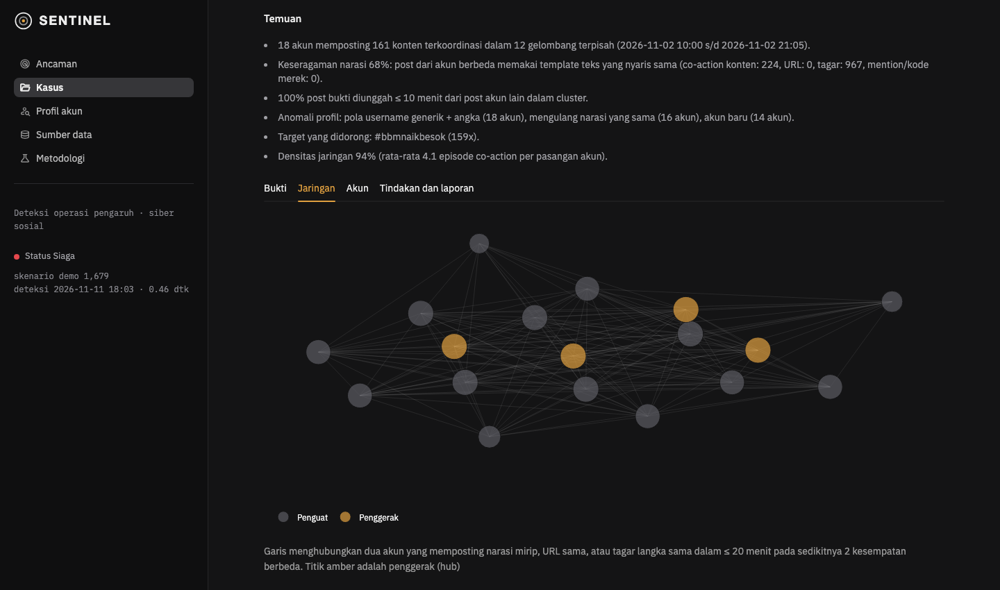

KARTIKA CYBER HACKATHON 2026 · KATEGORI SIBER SOSIAL · PROPOSAL KARYA
SENTINEL
Deteksi operasi pengaruh terkoordinasi di ruang siber sosial, dengan bukti yang bisa dipertanggungjawabkan
Menemukan jaringan akun yang bergerak serentak, berulang, dan seragam (buzzer, sockpuppet, spam judi online) lalu menjelaskan alasannya dalam Bahasa Indonesia untuk analis siber TNI AD.
94 %F1 pada komentar TikTok asli (held-out)
100 %precision: 0 akun organik dituduh
8–18 %F1 dua pendekatan umum pada data yang sama
< 1 dtkproses 1.700 post, tanpa GPU
Tim
[NAMA TIM] · [Nama anggota 1], [Nama anggota 2], [Nama anggota 3]
Demo online
sentinel-kartika-cyber.streamlit.app
Kode sumber
github.com/GlgApr/sentinel-kartika-cyber
Tanggal
November 2026
01Ringkasan
Operasi pengaruh di media sosial Indonesia tidak lagi dilakukan satu akun. Puluhan akun palsu memposting narasi yang sama dalam hitungan menit agar terlihat seperti suara publik. Bagi TNI AD, wujudnya antara lain hoaks rekrutmen "jalur khusus" yang mencatut nama institusi, disinformasi yang memicu kepanikan, phishing berkedok bansos, dan jaringan spam judi online yang membanjiri kolom komentar.
SENTINEL tidak menghitung volume atau sentimen. SENTINEL mencari bukti koordinasi: sekelompok akun yang bertindak serentak, berulang, dan seragam. Setiap temuan dikemas sebagai berkas kasus berisi skor, alasan tertulis, barcode sinkronisasi, peta jaringan, bukti ber-hash SHA-256, dan laporan intelijen siap kirim. Keputusan akhir tetap di tangan analis.
Diuji di data asli, bukan hanya di atas kertas. Versi awal SENTINEL menangkap 0 akun spam pada komentar TikTok asli. Setelah lima kelemahan ditemukan dan diperbaiki, versi yang kodenya dibekukan sebelum data baru ditarik mencapai F1 94 % dengan precision 100 % pada 2.002 komentar held-out. Dua pendekatan umum (filter teks kembar dan pemantau lonjakan) hanya 18 % dan 8 %, sambil menuduh 124 dan 1.617 akun yang tidak bersalah.
02Masalah dan relevansi bagi TNI AD
Analis siber menghadapi tiga hambatan yang tidak terselesaikan oleh dashboard monitoring biasa:
Viral organik dan viral rekayasa terlihat sama. Berita gempa dan kampanye buzzer sama-sama menghasilkan lonjakan volume. Alat berbasis volume akan menandai keduanya, sehingga analis tenggelam dalam alarm palsu.
Operator sengaja menghindari filter. Teks divariasikan sedikit demi sedikit, ditulis dengan huruf unicode "fancy" (𝐆𝐀𝐌𝐄𝟏𝟗𝟏), angka dekoratif (➋➐), homoglyph (VlKlNG27 untuk VIKING27), atau dieja terpisah (u b e t 9 6). Filter teks kembar meloloskannya.
Temuan harus bisa dipertanggungjawabkan. Sebagai institusi negara, TNI AD tidak boleh menuduh warga tanpa dasar dan harus netral terhadap opini politik. Skor "kotak hitam" tidak bisa dibawa ke pimpinan.
Skenario penggunaan
Ancaman
Yang dilakukan SENTINEL
Hoaks rekrutmen mencatut TNI AD
Menemukan kelompok akun yang serentak menyebar tautan pendaftaran palsu yang sama, lalu menyusun laporan dan bukti untuk take-down.
Astroturfing tagar pemicu panik
Membedakan tagar yang didorong jaringan terjadwal dari percakapan organik di waktu yang sama.
Phishing berkedok bansos
Menghubungkan akun-akun baru yang memutar domain phishing yang sama.
Jaringan spam judi online
Menangkap operasi yang memutar puluhan kode merek dengan templat tetap, termasuk yang menyebar berhari-hari tanpa posting serentak.
03Solusi: alur kerja analis
Dashboard mengikuti alur alat investigasi CIB profesional: antrean ancaman → berkas kasus → tindakan.
1 · Sumber dataTarik atau unggahData live TikTok, YouTube, X, Threads, Instagram, Mastodon; unggah CSV/JSON; skenario demo.
→
2 · AncamanAntrean terurut risikoStatus siaga, timeline organik vs terkoordinasi, kasus diurutkan skor.
Gambar 1. Halaman Ancaman. Batang merah adalah post dari jaringan terkoordinasi; lonjakan abu-abu tertinggi adalah berita gempa organik dan sengaja tidak ditandai.
Gambar 2. Berkas kasus. Barcode sinkronisasi (setiap garis satu post; garis yang berbaris vertikal berarti akun berbeda memposting di menit yang sama), kontribusi lima sinyal, dan temuan tertulis.
04Cara kerja
SENTINEL menilai perilaku, bukan isi opini. Pertanyaannya bukan "apakah narasi ini benar?", tetapi "apakah sekelompok akun bertindak bersama dengan cara yang tidak terjadi secara alami?".
#
Tahap
Teknik
Alasan
1
Normalisasi
NFKC, angka dekoratif → angka biasa, semua aksara (Thai, Arab, …) dipertahankan, kamus slang (yg→yang), kunci skeleton homoglyph
Menyamakan trik ejaan operator dan spammer
2
Representasi
TF-IDF char n-gram 3–5
Tahan typo dan parafrase ringan, tanpa GPU
3
Co-action
Jendela ≤ 20 menit: narasi mirip (cosine ≥ 0,60), URL sama, atau tagar/mention/kode merek langka sama
Koordinasi = aksi yang hampir bersamaan
4
Graf koordinasi
Edge hanya jika berulang: pasangan akun di ≥ 2 episode terpisah, atau motif (templat + target) sama di ≥ 2 gelombang
Satu kebetulan atau event viral tidak cukup
5
Operasi templat
Graf bipartit templat ↔ target; syarat rotasi (satu templat untuk ≥ 2 merek, atau satu merek lewat ≥ 2 templat)
Spam "tetes lambat" berhari-hari tanpa keserempakan
6
Clustering
Louvain + 2-core
Memisahkan operasi, membuang akun yang ikut secara kebetulan
7
Skor
Konten 30 %, waktu 25 %, profil akun 20 %, jaringan 15 %, amplifikasi 10 %; ambang 0,55, risiko tinggi ≥ 0,75
Skor transparan yang bisa dijelaskan
8
Triage
Keputusan analis tercatat, laporan, hash bukti
Manusia tetap memutuskan
Bila data profil akun tidak tersedia (misalnya data komentar), sinyal profil tidak dihitung dan bobot lain dinormalisasi ulang, sehingga "tidak tahu" tidak diperlakukan sebagai "normal".
05Kebaruan
Tidak butuh data latih, dan itu disengaja. Model berlabel (seperti Botometer) hanya mengenali pola yang pernah dilihat dan mewarisi bias pelabelnya. Aturan perilaku SENTINEL langsung bekerja pada narasi baru hari ini dan netral terhadap opini.
Kriteria "koordinasi berulang". Inilah yang membedakan viral rekayasa dari viral organik: ribuan orang bisa membahas gempa di jam yang sama, tetapi tidak dengan kelompok yang sama berulang kali.
Tiga pola operasi nyata, semuanya ditemukan di data TikTok Indonesia: gelombang serentak, motif yang berulang lintas gelombang dengan kode berganti, dan operasi templat "tetes lambat" tanpa keserempakan.
Dibuat untuk medsos Indonesia: slang, kata ulang (laki2 bukan kode merek), satuan (5kg), huruf unicode "fancy", angka dekoratif, homoglyph.
Explainable dan siap pengadilan: setiap skor punya alasan tertulis Bahasa Indonesia; bukti diunduh dengan sidik jari SHA-256 (chain of custody).
Jujur terhadap batasnya: kegagalan yang ditemukan saat pengujian dicatat terbuka (Bagian 06), bukan disembunyikan.
06Hasil uji
a. Data asli: komentar TikTok Indonesia
±8.000 komentar publik dari 95 video (topik: TNI AD, rekrutmen, judi online, DPR, timnas, harga beras, dan lain-lain) ditarik lewat ScrapeCreators. Setiap akun spam diperiksa manual. Untuk uji akhir, kode dibekukan dan hash-nya dicatat sebelum data baru ditarik, sehingga tidak ada penyetelan pada data uji.
Metode (held-out, 2.002 komentar, 69 akun spam)
Precision
Recall
F1
Akun dituduh salah
SENTINEL
100 %
88 %
94 %
0
Filter teks kembar (duplicate filter)
13 %
28 %
18 %
124
Pemantau lonjakan (burst monitor)
4 %
99 %
8 %
1.617
Enam operasi judi online berbeda tertangkap. Di seluruh 8.000+ komentar tidak ada akun organik yang dituduh; slogan politik yang diulang banyak akun ("nkri harga mati" oleh 7 akun) tidak ditandai karena tidak ada bukti koordinasi, sementara filter teks kembar menuduh semuanya.
b. Perjalanan perbaikan
Versi
Yang ditemukan di data asli
Perbaikan
v1
0 tertangkap. Normalisasi membuang huruf Thai, emoji, dan unicode "fancy"; syarat pasangan berulang terlalu ketat karena yang berulang adalah kelompoknya
NFKC + semua aksara; mention/kode merek sebagai target; pengulangan level motif
v2
Skor operasi nyata 0,543 (lolos tipis); laki2 terbaca kode merek; homoglyph tidak dikenali; recall 0 % pada spam "tetes lambat"
Amplifikasi diperluas; pengecualian kata ulang/satuan; kunci skeleton; detektor operasi templat
v3 (beku)
Held-out: precision 100 %, recall 88 %, F1 94 %
c. Skenario sintetis berlabel (pagar regresi)
Tingkat penyamaran (rata-rata 5 seed)
SENTINEL F1
Burst monitor F1
Duplicate filter F1
0,0 (normal)
100 %
22 %
36 %
0,5
100 %
18 %
35 %
1,0 (operator sangat rapi)
95 %
16 %
34 %
d. Yang belum bisa (diungkap terbuka)
Skor per akun tidak andal. Pada dataset bot Twitter berlabel Cresci-2017, skor buzzer per akun tidak lebih baik dari acak (AUC 0,32–0,55). Halaman Profil akun karena itu diposisikan sebagai lembar konteks; bukti yang sah adalah keanggotaan dalam operasi terkoordinasi.
Bot retweet tidak serentak baru tertangkap 29 % (Cresci social spambots #1). Solusinya jaringan co-share lintas konten (Pacheco dkk., 2021), masuk rencana pengembangan.
Satu mode alarm palsu: kerumunan asli yang menjawab satu akun pemancing di menit yang sama. Ini alasan setiap flag tetap melalui keputusan analis.
Spam satu merek dengan satu templat sengaja tidak ditandai karena secara struktur sama dengan kutipan atau meme organik.
07Kelayakan implementasi di satuan
Ringan dan bisa on-premise
Python + SQLite, tanpa GPU dan tanpa layanan cloud berbayar. 1.700 post diproses kurang dari 1 detik di laptop biasa.
Bisa dijalankan di jaringan tertutup satuan: data diunggah sebagai CSV/JSON dari alat pengumpul yang sudah dipakai.
Instalasi satu perintah (./run.sh); 17 tes otomatis.
Terukur dan dapat diaudit
Semua parameter (jendela waktu, ambang, bobot) ada di satu berkas konfigurasi.
Setiap run deteksi tercatat; keputusan analis dipertahankan antar-run.
Bukti ber-hash SHA-256 untuk keperluan hukum dan take-down.
Etika dan kepatuhan
Netral politik: yang dinilai cara bertindak, bukan isi opini atau afiliasi.
Human-in-the-loop: skor adalah rekomendasi; tidak ada tindakan otomatis terhadap akun.
Data pribadi: demo memakai data sintetis fiktif. Mode Presentasi menyamarkan username dan tidak menyimpan avatar/URL. Data uji asli tidak disimpan di repositori (UU PDP, rulebook).
Rencana pengembangan
Lensa co-share untuk bot berbagi-ulang yang tidak serentak.
Konektor Telegram kanal publik dan mode near-real-time (per 5 menit) dengan notifikasi.
Embedding semantik Bahasa Indonesia (IndoBERT) untuk parafrase berat.
Deteksi gambar/meme duplikat (perceptual hash).
RBAC dan audit log untuk banyak analis.

Gambar 3. Jaringan koordinasi dalam satu kasus. Garis berarti dua akun ber-co-action di sedikitnya dua kesempatan berbeda; titik amber adalah akun penggerak (hub).